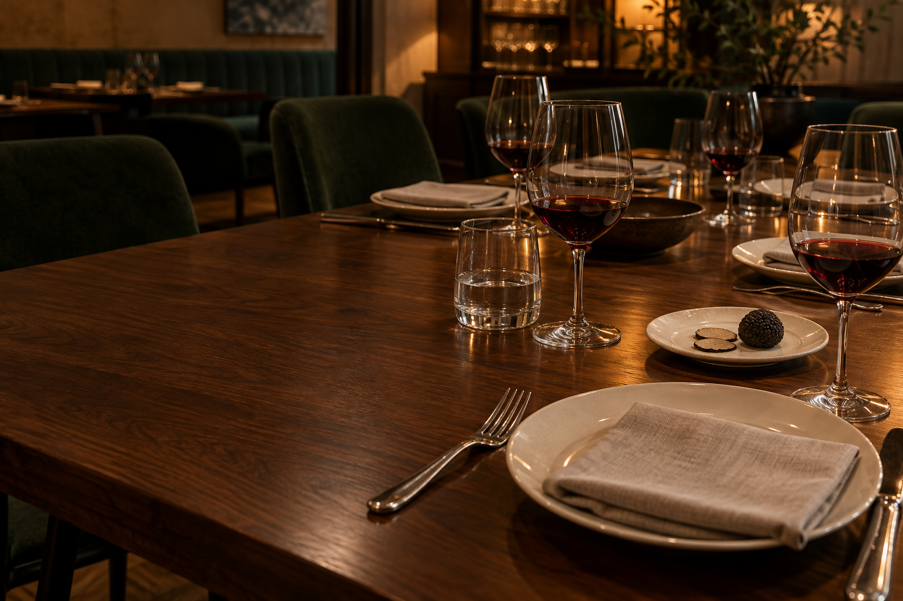
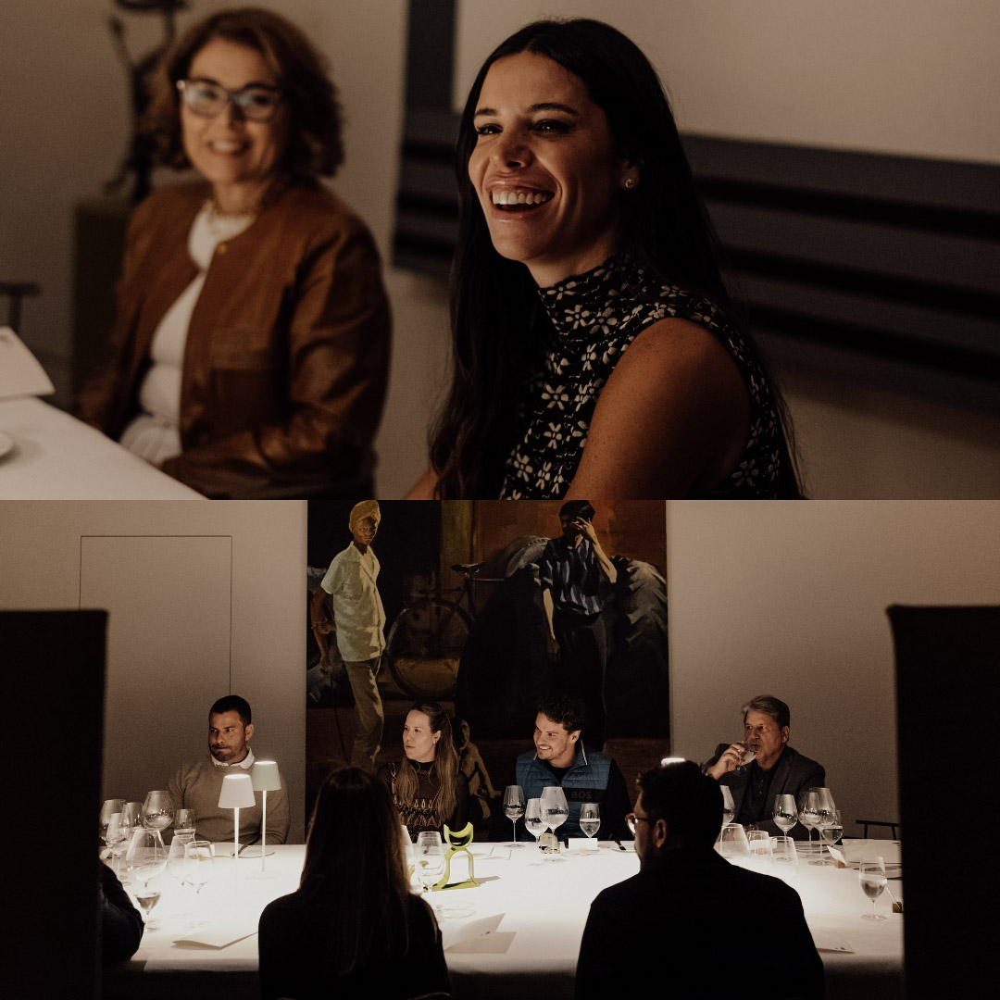
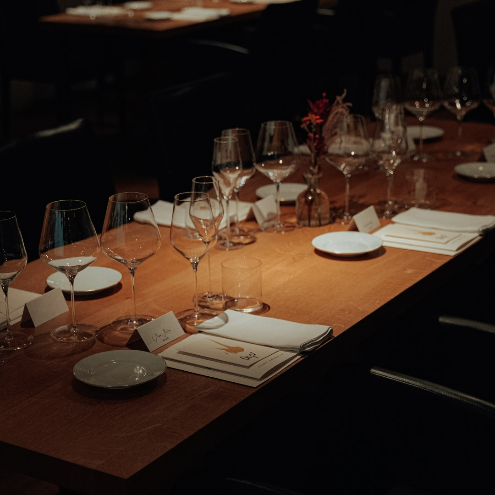
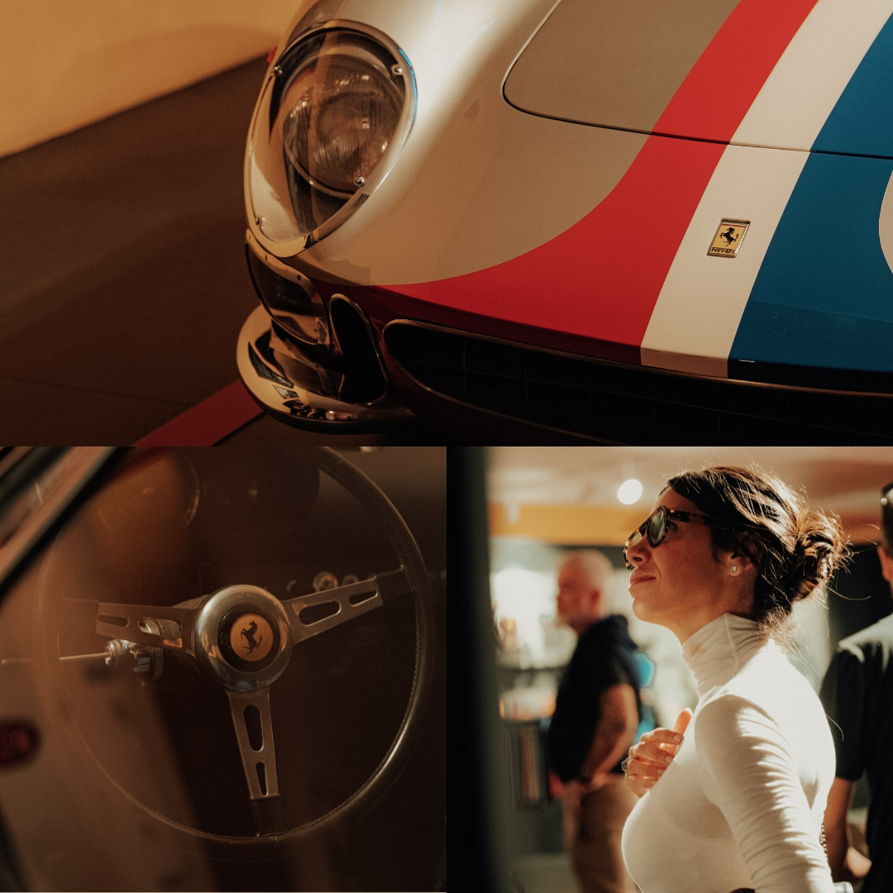
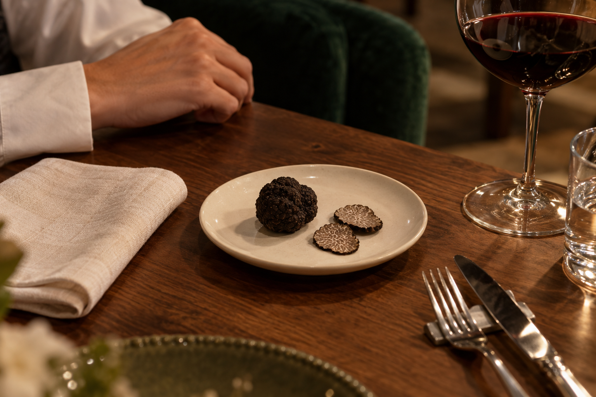
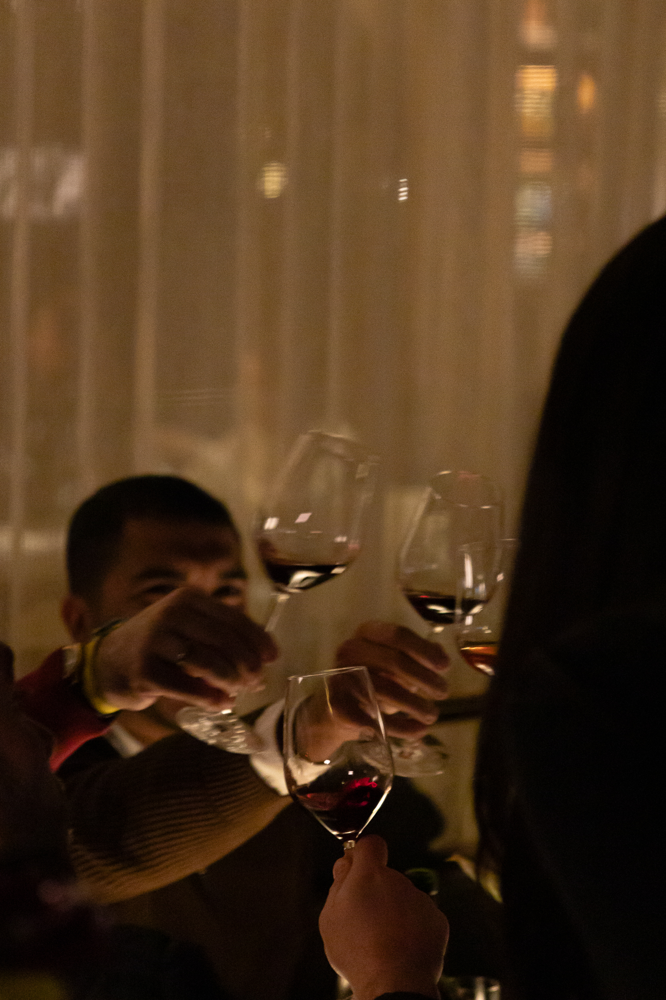

O menu
Alex Atala
Alex Atala assina um menu de cinco tempos em que as trufas são o ponto de partida. Cada preparo explora o ingrediente com atenção aos aromas, aos sabores e ao equilíbrio do prato.

22 de outubro de 2026 19h às 22h · Resid Bar
Um jantar dedicado às trufas, em cinco tempos por Alex Atala, com vinhos selecionados por Gabriela Monteleone.
Reservar minha vaga Descobrir a experiênciaDa Itália ao Resid
No ano passado, levamos membros e seus convidados a Modena, na Itália, para uma imersão em gastronomia, cultura e arte com Massimo Bottura e Alex Atala. Foram dias de encontros e experiências que ainda fazem parte das nossas conversas.
Neste ano, trazemos um pouco daquela vivência para a mesa do Resid Bar. Trufas em tensão dá continuidade a essa história, com um jantar dedicado ao ingrediente e ao prazer de reunir pessoas em torno da gastronomia.



O conceito
Trufas em tensão é uma noite dedicada às trufas e às possibilidades que elas trazem à gastronomia. Um jantar para apreciar seus aromas e sabores, com tempo para perceber os detalhes de cada prato.
O menu de cinco tempos assinado por Alex Atala explora o ingrediente em diferentes preparos. A harmonização de Gabriela Monteleone acompanha essa sequência, aproximando os vinhos dos sabores que chegam à mesa.
Entre uma taça e outra, há espaço para trocar impressões, encontrar novas preferências e aproveitar a companhia. Uma experiência para quem gosta de comer bem e de se demorar à mesa.

As assinaturas
O menu
Alex Atala assina um menu de cinco tempos em que as trufas são o ponto de partida. Cada preparo explora o ingrediente com atenção aos aromas, aos sabores e ao equilíbrio do prato.

Os vinhos
Gabriela Monteleone assina a seleção dos vinhos e a harmonização do jantar. Os rótulos são escolhidos para acompanhar cada tempo, respeitando a delicadeza das trufas e o equilíbrio dos pratos.

À mesa
A jornada
Da chegada ao encerramento, uma noite inteira no Resid Bar.
Seu lugar à mesa
Quinta-feira, 22 de outubro de 2026
19h às 22h · Resid Bar · São Paulo
Uma mesa para 20 convidados.
Preço por pessoa
R$ 1.980 + 2.000 créditos RSD